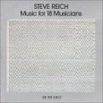
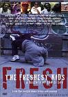

01.30.08
Posted in news, politics at 11:20 am by danvk
The big news of the day is that John Edwards is dropping out of the Democratic presidential race. It’s not clear to me whether this helps Clinton or Obama. From what I can tell, Edwards’ main constituency was older, white men. In the past, men have tended to favor Obama, whereas older people have tended to favor Clinton. It will be interesting to follow the polls over the next few days.
One thing that’s certain about Edwards’ decision is that it’s a good one for the Democratic party. Because each state awards delegates proportional to its popular vote, he could have grabbed maybe 5-10% of the delegates. This would have almost certainly prevented either Clinton or Obama from getting a majority, and led to a brokered convention. Now, that could only happen if there were an exceptionally close delegate race.
Permalink
01.19.08
Posted in sports, tennis at 3:22 pm by danvk
Because of the 15 hour time difference, most Americans don’t get particularly excited about the Australian Open. It’s our loss. The first major of the year always manages to produce some interesting stories, and this year is no exception. Good thing there’s danvk.org to help you catch up!
Yesterday alone saw:
I managed to catch the last set of the Federer match, and it was fantastic. Both players played well. Federer had less trouble on his serve in the final set (he set a career high for aces in a match), but with each passing game it seemed like the chances of some random twist turning the match the other way increased. After all, the last time Roger lost here was in 2005, when Marat Safin knocked him out in a five-setter that ended well after midnight.
It’ll be fun to see if Tipsarevic continues to play this well. He seems like an interesting guy. He’s the only tennis player I know of who wears goggles on court, and he has a Dostoyevsky quote tattooed on him (“Beauty will save the world” from The Idiot). Frankly, I’m surprised that more young players don’t throw the kitchen sink at Fed like Janko did. It’s a great way to make a name for yourself. After all, people first started noticing Federer when he knocked off Pete Sampras at the 2001 Wimbledon Championships.
The announcers on ESPN pointed out an interesting fact about this tournament. It’s the first time in many years that a single tournament can decide who will be #1. Here’s how it works:
- Rankings in tennis are based on your performance in events over the last 52 weeks.
- Rafael Nadal has 5780 points
- Roger Federer has 7180 points
- At a Grand Slam you get 1000 points for winning, 700 for runner-up, 450 for semis, 250 for quarters, 150 for round of 16, 75 for round of 32, etc.
- Roger got 1000 points last year — if he’d lost yesterday, he would have dropped to 6225 points
- Nadal got 250 points last year — if he wins this year, he’ll have 6530 points
If Roger makes it to the semis, or Rafa doesn’t win the title, then Federer will remain number one. You can argue about the merits of the tennis ranking system, but it’s certainly predictable!
One final twist: if Rafa doesn’t pass Roger at this tournament, it will be impossible for him to do so for several more months. That’s because Rafa cleaned up during this time last year, while Federer kept losing to this guy. Rafa has points to defend, while Federer does not. You can see the full points breakdown on the ATP profiles for Federer and Nadal.
Permalink
01.04.08
Posted in web at 4:00 pm by danvk
I’ve been meaning to write a post for a while about how difficult it is to choose a browser on the Mac. There’s no perfect choice, the Camino browser’s combination of compatibility and a Mac feel has made it mine.
My main gripe about Camino is the lack of plugins, particularly the lack of a good Greasemonkey equivalent. In Firefox, I use Greasemonkey to kill the annoying ads that pop up on nytimes.com whenever you double-click a word. In Camino, I have to avoid double-clicking random words. For some reason, I find this completely impossible.
There’s an official feature request for user script support in Camino, but I’m not holding my breath. The NY Times problem bothered me so much that I spent some time creating a Camino workaround.
The idea is to prevent Camino from loading the JavaScript file that provides this “feature”: http://graphics8.nytimes.com/js/common/screen/altClickToSearch.js
To do so, create a new text file somewhere on your machine (I put mine in ~/Library/nytimes.pac) with the following contents:
function FindProxyForURL(url, host) {
if (url == “http://graphics8.nytimes.com/js/common/screen/altClickToSearch.js”) {
return “PROXY 0.0.0.0:3421″;
}
return “DIRECT”;
}
Save that file and follow these instructions to tell Camino to use your PAC file. In my case, I set network.proxy.autoconfig_url to file:///Users/<your user name>/Library/nytimes.pac. Now clear your cache, restart Camino, and try visiting http://graphics8.nytimes.com/js/common/screen/altClickToSearch.js. If you’ve done it right, you should get an error saying “Proxy Server Refused Connection”.
Enjoy the popup-free browsing!
Permalink
Posted in music, reviews at 1:45 pm by danvk
(See also podcasts, TV shows, books and movies)
This is the last post in this series before we resume our regularly scheduled programming. I still discover most of my music through Pitchfork’s lists, so I’ve included links to those lists where appropriate. You may also want to check out my Favorite Albums of 2006.
Silent Shout
(The Knife – 2006; PF #1 album of 2006)
Pitchfork’s fave album of 2006 is one of my fave albums of 2007. The opening beat/song really pull you in, and the first nine tracks are all good, with “Marble House” and “Like a Pen” being standouts. The last two tracks are just miserable though, I mean “Lily, Rosemary, and the Jack of Hearts” bad. This was the only album that I discovered through the 2006 list that I really enjoyed.
 In Rainbows
In Rainbows
(Radiohead – 2007; PF #4 album of 2007)
With its innovative “pay what you want” online distribution, it’s a good thing Radiohead made such a great album. It sounded nondescript the first time I listened to it, but quickly grew on me. Favorite tracks include “Bodysnatchers”, “Weird Fishes/Arpeggi” and “Jigsaw Falling into Place”.
 Hip Hop Is Dead
Hip Hop Is Dead
(Nas – 2006)
I’ve already reviewed this album before, so it should come as no surprise that I liked it! It’s too bad that every Nas album gets compared to his first. Maybe he wishes he pulled a Radiohead instead.
Music for 18 Musicians
(Steve Reich – 1974; PF #53 album of the 1970′s)
It’s on the PF list, but The Rest Is Noise inspired me to listen to it. I enjoyed it the first time through, but couldn’t say I was really inspired. Then I started hearing those bass clarinets everywhere: the sound of a bus engine, the rhythm of a toothbrush across my teeth. For bonus points, try picking out the 18 musicians. (I think this would be really hard!)
 Midnight Marauders
Midnight Marauders
(A Tribe Called Quest – 1993; PF #75 album of the 1990′s)
I could do without the interludes, but the main tracks are fantastic grooves, combining jazz, funk and hip-hop. Favorite tracks include “8 Million Stories”, “Sucka Nigga”, and “Midnight”.
 Blue
Blue
(Joni Mitchell – 1972; PF #86 album of the 1970′s)
I first heard Joni Mitchell in high school but was nonplussed. Then I heard a CD of songs whose names all contained the word “California” on it about two years ago. Joni Mitchell’s “California” made an appearance right after Tupac’s “California Love”. It’s certainly a ridiculous sequence, but I’m been torn on whether it’s also a good one. It’s tough to follow “California Love”, so maybe you should just go for something as different as possible. Once you get used to her voice, this is a really enjoyable album.
 FutureSex/Love Sounds
FutureSex/Love Sounds
(Justin Timberlake – 2006; PF #25 album of 2006)
As a friend of mine explained, we should all be thanking JT: “I didn’t even know sexy was gone, but he’s bringing Sexyback!” I was also really impressed by his concert at Madison Square Garden, which I saw on TV. You can watch clips of it here.
 Grace
Grace
(Jeff Buckley – 1994; PF #69 album of the 1990′s)
The most famous accidental drowning of the last 15 years. I prefer the harder rock songs to the more down-tempo ones like “Lilac Wine” and “Hallelujah”. Faves are “Last Goodbye” and “Eternal Life”.
Permalink
01.03.08
Posted in movies, reviews at 10:12 pm by danvk
(See also podcasts, TV shows and books)
In case it hasn’t been clear from the previous posts, these are movies that I enjoyed in 2007, rather than movies that came out in 2007. I couldn’t hold myself to five movies this year, so I went with seven. Several of these came from “best of 2006″ lists like the Oscars. A few others came from the BAFTAs.
 My Summer of Love
My Summer of Love
(Pawel Pawlikowski – 2004)
With only three real characters, this is a very simple, tightly-constructed movie. There’s nothing excessive about it. It’s carried by its strong themes: class, adventure, deception. The fact that the story revolves around a lesbian relationship is never mentioned — its light treatment here makes films like Brokeback Mountain seem very heavy-handed in comparison. I liked Pawel’s explanation of the film:
If you wanted to make a film about British teenagers it would be… well, it wouldn’t interest me, let’s put it like that. They’d be listening to music I hate, watching TV all the time, and talking about Big Brother. I needed to remove it, to get to the essence of adolescence without the paraphernalia of today. In a way I am arrested in my adolescent emotions, like most of us I think are, so [the film is] very personal, funnily enough, despite it being about two girls.
 Touching the Void
Touching the Void
(Kevin Macdonald – 2003)
Another BAFTA winner, this is a documentary about Joe Simpson and Simon Yates’ mountaineering expedition in the Andes. They’re both extremely down to earth, which makes it possible to relate to the extraordinary experience they went through. Simpson has dealt more directly with the prospect of his own death than just about anyone else, and his night in the crevasse is at the heart of this movie. His reaction isn’t heroic, but it’s very genuine.
The Lives of Others (Das Leben der Anderen)
(Florian Henckel von Donnersmarck – 2006)
I saw two excellent German movies this year, both featuring Ulrich Mühe (the other being Zwartboek, technically a Dutch movie). Ironically, Mühe died a few weeks after I saw this movie. It follows a writer in Eastern Germany and a Stasi agent (Mühe) assigned to observe him. I don’t want to say too much, but the ending is absolutely perfect. It couldn’t have been done any better.
 Pan’s Labyrinth
Pan’s Labyrinth
(Guillermo del Toro – 2006)
The combination of Spanish Civil War and a child’s fantastical imagination is strange, but it works surprisingly well. Innocence and Experience would be the themes here. An interesting side note: by 1944 the Spanish Civil War was almost entirely over. These really were the last holdouts.
 The Fog of War
The Fog of War
(Errol Morris – 2004)
An extended conversation with Robert McNamara, one of the more interesting and controversial Secretaries of Defense in the 20th century. I can only imagine how interesting it must be for someone who lived through the Vietnam War to hear what was going on behind the scenes like this. I can see why he was so hated during that war. He was a statistician during World War II managing bomber runs, and this kind of analytical approach to people informed everything else he did in his life. He views everything in a very detached way, always looking at the numbers. An interesting look at an interesting life.
The Freshest Kids: A History of the B-Boy
(Israel – 2002)
A documentary about break-dancing, or “breaking” as the dancers prefer to call it. I learned a lot about the history of hip-hop from this movie, but if you don’t care about that, there are worse things you could do than watch a few hours of break-dancing. Highly recommended if you’re curious what the difference between “rap” and “hip-hop” is.
 The Room
The Room
(Tommy Wiseau – 2003)
Tommy’s a genius, what more can I say? Oh right, “You’re tearing me apart, Lisa!”
Trailer
Permalink
« Previous entries
Next Page »